Why the inertia tensor is the inertia tensor.
[back to inertia page]
Angular Inertia in 2D
When doing 2D rigid body physics, we use a constant called the moment of inertia for each body, which describes how resistant that body is to being rotated.
Treating our rigid body as a collection of point masses, its moment of inertia,
which we will call i,
is:
| (1) | 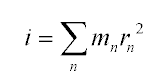 |
r is just the distance of each point from the center of mass. To find r2, we find the vector r from the center of mass to each point, and dot-product that vector with itself:
| (2) | 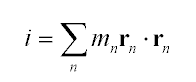 |
| (3) | 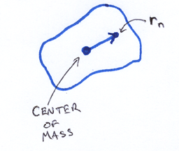 |
Angular Inertia in 3D
Though it's a little bit more complex, the 3D case is a straightforward extension from 2D. We're going to push on our body at some point, in some direction. This point, direction, and center of mass, together define a plane of rotation, and thus an axis that we are rotating around. (Unless we are pushing along a ray through the center of mass, but in that case, the object just doesn't rotate since there is no torque). We'll call the axis of rotation a. To simplify some upcoming math, we'll define a as being unit length.
| (4) | 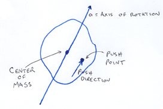 |
As in 2D, we want to compute Sum m r2, only now, r is the distance from the axis of rotation to the point of mass. We'll call each point of mass xn. For simplicity's sake, we'll work in a coordinate system where the center of mass is at the origin. As in 2D, we can compute r2 as the vector dot product r∙r, only now r is the component of x orthogonal to a.
| (5) | 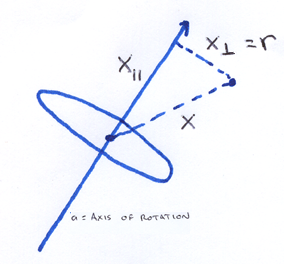 |
This is simple enough to compute, and we plug it into our expression for the angular inertia:
| (6) | 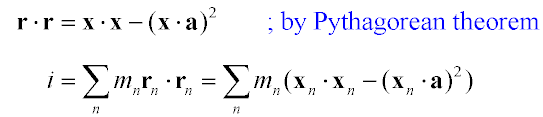 |
This equation for i would work fine if we stored our body as a bunch of point masses, but it would be expensive to compute, as we need to iterate over all point masses every time we apply a force to the body. Though it looks like we can't evaluate equation 7 until we know the axis of rotation (so we can do those dot products), because everything in equation 7 is linear, we can factor the equation across all the additions, so that we're just working with a summary of the point masses.
| (8) | 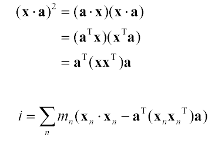 |
Now, in order to combine terms so that we can factor the a out further, we want to promote the scalar x∙x to something matrix-sized. We can do this just by wrapping it with aT and a:
| (9) | 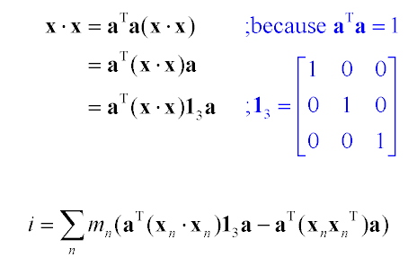 |
Now since the axis is constant over the summation, we can factor a all the way out:
| (10) | 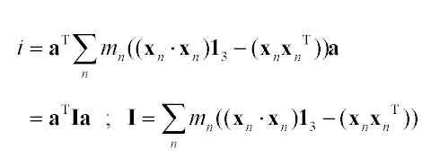 |
This gives us I, a 3x3 matrix that represents the angular inertia of a 3D body, which can be entirely precomputed. When it comes time to push the body around, we find a; computing aTIa gives us a scalar that tells us how hard it is to rotate the body in that direction.
The way people standardly do 3D physics, they don't actually want a scalar, the way they do in 2D. The reason is that you want to remember which way the body is rotating. In 2D, we didn't have to remember, since there's only one plane of rotation. So we just skip the multiplication of aT on the left, and stop at Ia. That gives us a vector parallel to the axis of rotation a, whose length describes how difficult it is to rotate that way.
To see this angular inertia matrix ("Tensor of Inertia") in the form that physics books usually write it, we can expand equation 10:
| (11) | 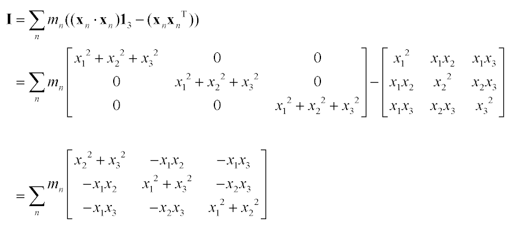 |
but I am going to drop that like a hot potato because it leads to just the sort of icky symbol manipulation I'm trying to stay away from. It's only here to provide a concrete connection between this derivation and what physics books say.
A Mental Shift
Physics texts treat the tensor of inertia as a fundamental primitive about a body that you want to compute, but I don't like to see it that way. Looking at the form of the matrix, one can't help but feeling that it's a bit mixed up and ugly. And looking at equation 11, it seems we arrived at this ugly thing by starting with some simpler and nicer things, and subtracting one from the other.
Going back to the definition of I from equation 10, we can distribute the sum to break it into two matrices:
| (12) | 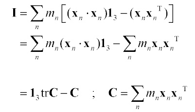 |
(tr C indicates the trace of the matrix C)
So we can compute C, which has a very simple form, then convert from C to I any time we want. To me, C is more intuitive, and deserves to be treated as the fundamental body primitive; I is just C with some case-specific manipulations folded in.
C is the 2nd moment of the mass distribution, also known as the mass-weighted covariance of the body. You can do a lot of things with C besides just convert to I (for example, you can graph it).